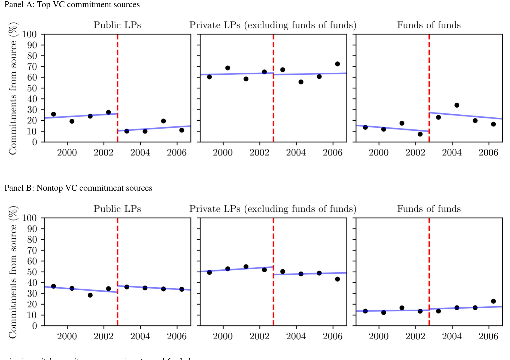
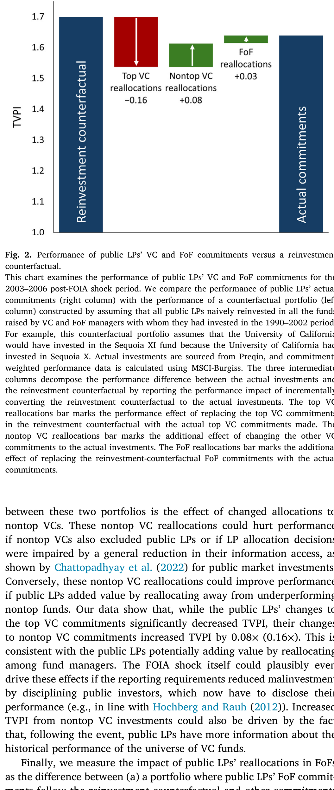
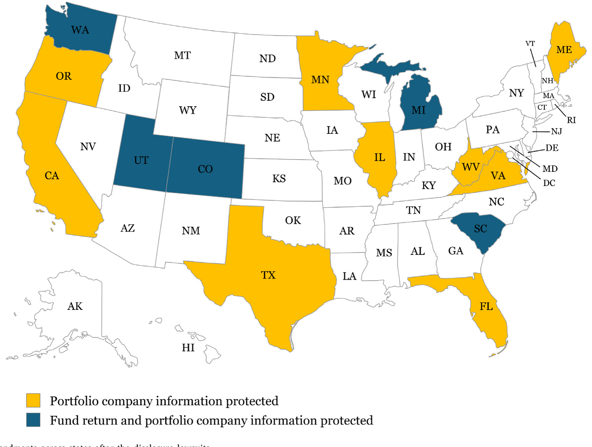
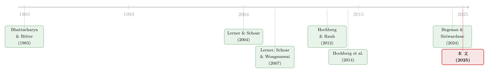

把名字从名单上划掉：当「透明」成了顶级 VC 拒绝公募资金的理由
本文读的是 Abuzov, Gornall & Strebulaev (2025, Journal of Financial Economics)：2002 年末的几桩法院判决，让美国公立养老金和公立大学捐赠基金（公募 LP）再也无法替它们投资的基金「保密」。结果是——只有最顶尖的那批 VC把公募 LP 从新基金里清了出去。被挤出去的代价，是这些公募 LP 在 $14 billion 的 VC 出资上，少赚了约 $1.6 billion。而 VC 们拼命想守住的，并不是自己的业绩，而是被投公司的信息。
1 一封分手信
2003 年 8 月，红杉资本（Sequoia Capital）的传奇合伙人 Michael Moritz 给加州大学写了一封信。开头一句话，冷得像一份判决书：
「在共事 22 年之后，一些完全超出我们控制的力量，迫使我们必须结束这段关系。」
红杉做了什么？它把加州大学和密歇根大学一并「请出」了自己未来的基金，甚至要求它们从现有基金里撤资。要知道，能被红杉选中当 LP（limited partner，有限合伙人，也就是给基金出钱的金主），在创投圈里几乎是一种身份的象征。一家顶级 VC 主动赶走两所老牌名校的钱，这在当时是件极反常的事。
那么，到底是什么「超出控制的力量」？
答案是四个字母：FOIA——美国各州的《信息自由法》(Freedom of Information Act)，又叫「阳光法案」(sunshine laws)。这是一套要求政府机构应公众申请、公开其持有信息的法律。公立养老金、公立大学，都是政府机构。它们投了哪只基金、赚了多少钱、基金里又投了哪些创业公司——理论上，记者、研究者，甚至竞争对手，都能一纸申请索要过来。
这就是这篇论文的全部张力所在：当你的金主突然被法律强制「透明」，而你做的恰恰是一门靠「不透明」吃饭的生意，你会怎么办？
2 一场没人计划的自然实验
要回答这个问题，作者需要一个「冲击」——一个在某个时点突然改变了部分 LP 透明度、又跟 VC 本身的好坏无关的外生事件。2002 年末的那串判决，恰好就是。
故事的导火索在 2002 年 9 月 18 日：得克萨斯大学投资管理公司（UTIMCO）面对「要么披露、要么打官司」的选择，干脆主动把基金层面的回报数据公开了。这一下捅了马蜂窝。紧接着，针对加州教师退休系统（CalSTRS）、加州公务员退休系统（CalPERS）和加州大学的一连串标志性诉讼接踵而至。记者们援引 FOIA，要求公开的不只是基金回报，还包括基金条款、其他出资人的身份，乃至被投公司的经营信息。
2002 年 11 月，法院在 CalPERS 一案中作出初步裁定：单只基金的业绩不构成商业秘密，因此必须依加州 FOIA 披露。但法院同时留了一个悬而未决的口子——被投公司数据的保密性，没说。12 月，CalPERS 与原告和解，公开了基金层面的业绩，而被投公司数据得以保留。
这个「口子」是全文的灵魂。基金回报被迫公开了，但被投公司信息会不会也被卷进来，在很长一段时间里悬而未决。正是这种不确定性，逼着 VC 们提前行动。后文你会看到，他们所有的合同创新、所有的立法游说，瞄准的几乎全是这个口子。
作者把这一连串判决统称为 FOIA 冲击 (FOIA shock)。它的妙处在于：受冲击的是公募 LP（州养老金、公立大学捐赠基金），而私募 LP（私人养老金、基金会、私立大学捐赠基金）不受 FOIA 约束，天然地构成了一个对照组。
于是识别策略呼之欲出。
3 识别策略：一个双重的双重差分
这篇文章的核心方法是双重差分 (difference-in-differences, DiD)，但它其实是「双重」的双重差分。
第一重差分是时间：FOIA 冲击前 vs. 冲击后。第二重差分是 LP 类型：受 FOIA 约束的公募 LP vs. 不受约束的私募 LP。把两者交叉，就能识别出「冲击之后，公募 LP 出资份额相对私募 LP 发生了什么变化」。
但真正关键的一步，是作者引入的第三个维度——VC 的质量。他们按 1995–2001 年间 VC 在被投公司里持有董事会席位的 IPO 数量给 VC 排序（做法上接近 Nahata (2008)），把前 20 名定义为 顶级 VC (top VCs)。这 20 家仅占当期基金数的 9%，却募走了 22% 的资本。剩下的就是非顶级 VC。
为什么要切这一刀？因为如果只看「公募 LP 份额是否下降」，你分不清这是 VC 的反应，还是经济大环境（别忘了，背景是网络泡沫破灭）造成的。但如果只有顶级 VC砍掉了公募 LP、非顶级 VC 没动，那就很难用宏观环境来解释了——泡沫不会专门挑顶级 VC 的公募 LP 下手。
数据上，VC-LP 出资关系来自 Preqin；LP 组合配置与回报来自 MSCI-Burgiss；VC 的 IPO 排名来自 VentureSource。
4 反转：只有最好的那批 VC 动了手
结果干净得让人意外。
FOIA 冲击之后，顶级 VC 在新基金中来自公募 LP 的出资份额，相对非顶级 VC 这个对照组，下降了约 15 个百分点——大约是冲击前水平的一半。而 VC 的其他特征——投资阶段、行业偏好、目标地域——都与公募 LP 份额的变化没有显著关联。
更重要的是动态：冲击之前，顶级 VC 与非顶级 VC 的公募份额走势平行（pre-shock parallel trends），冲击之后立刻出现一个差异化的、向下的跳跃。这正是 DiD 最想看到的图形，也是因果解读的底气所在。

Figure 1: Dynamics in capital commitments across investor and fund classes
注意这里的反转。坊间传闻里，几乎所有 VC 都对 FOIA 判决怨声载道。但数据说的是另一回事：平均而言，只有顶级 VC 真的把公募 LP 赶了出去。而且不是所有顶级 VC 都强硬——前文那家年轻的 MPM Capital 不但没排斥 CalPERS，反而趁势募到了 2002 年最大的创投基金之一，$900 million 的 MPM Bioventures III；顶级 VC 中的 New Enterprise Associates 也公开表示不会歧视公募 LP。
那么，为什么偏偏是顶级 VC？
5 真正的机制：不是「更想藏」，而是「更藏得起」
这是全文最见功力的地方。作者把可能的解释拆成两条互相竞争的渠道，然后用一连串证据去做排除法。
第一条叫资本供给渠道 (differential supply of capital channel)：顶级 VC 之所以能赶走公募 LP，是因为它们根本不缺钱——它们的 LP 需求是超额的（Sensoy et al., 2014），把一个公募 LP 划掉，立刻有别人补上。也就是说，它们「换得起」LP。
第二条叫隐私需求渠道 (differential demand for privacy channel)：顶级 VC 之所以反应大，是因为它们更在乎隐私——比如手里握着更值钱的被投公司专有信息，或者更想隐瞒给某些 LP 的费率折扣。也就是说，它们「更想藏」。
注意：两条渠道都以「VC 对隐私有需求」为前提——否则没人会因为透明而赶走金主。它们的区别只在于：顶级 VC 与非顶级 VC 之间的差异，到底来自「更想藏」（需求侧），还是「更藏得起」（供给侧）。
作者的证据，几乎一边倒地指向供给侧：
其一，如果是需求侧，那么早期阶段基金、特定行业基金理应隐私需求更高、反应更大——但数据里，无论投资阶段还是行业，都与 VC 的反应无关。
其二，若顶级 VC 是为了隐瞒「给不同 LP 的差异化费率」，这也站不住脚。恰恰相反，Begenau & Siriwardane (2024) 发现，需求旺盛的基金更不倾向于使用分层费率结构——顶级 VC 通常不靠费率把 LP 分三六九等。
其三，也是我最喜欢的一招：作者把同样的分析搬到并购基金 (buyout, BO) 上。BO 行业比 VC 可扩展性强得多（Metrick & Yasuda, 2010），顶级 BO 基金随时能把规模做大，并不面临顶级 VC 那种「LP 配给」(LP rationing) 的约束。同时，顶级 BO 基金论专有信息的价值，未必输给顶级 VC。结果呢？顶级 BO 基金对披露法几乎毫无反应。如果是需求侧驱动，顶级 BO 也该躲；它们没躲，说明躲不躲的关键在「换不换得起 LP」，而非「想不想藏」。
其四，再换几个「逼近最优规模」的代理变量——高于行业标准的附带权益 (carried interest)、设有附属基金 (auxiliary funds)、更高的基金序号 (fund sequence number)——这些「已经做到接近容量上限」的 VC，同样出现了公募出资的下降。
一句话总结这条主线：顶级 VC 砍掉公募 LP，不是因为它们比别人更想藏，而是因为它们比别人更藏得起。
6 那么，他们到底在藏什么？
既然 VC 对披露如此敏感，一个自然的问题是：他们拼了命想保护的，究竟是哪一类信息？
作者比对了同一批 VC 在 FOIA 冲击前后募集基金的有限合伙协议 (limited partnership agreement, LPA)，发现了一整套新出现的「防火墙」：限制释放给公募 LP 的信息、只通过临时在线门户提供数据、在协议里专门划出一类信息权受限的 LP（取名就叫「FOIA Partner」）。

Figure 3: summarizes the changes in these contracts around the FOIA
而合同条款的指向性极强：VC 们压倒性地为被投公司信息加上了强保护；至于基金回报信息，有些 VC 保护了，另一些则干脆写明「若法律要求则可披露」。这一冷一热的对比说明，VC 和 LP 双方心里都有杆秤——基金业绩可以见光，被投公司信息绝不能。
这一点甚至能在数据里间接读出。Preqin 主要靠向公募 LP 发 FOIA 申请来收集数据；冲击之后，顶级 VC 的业绩信息在 Preqin 里更容易「缺失」。而且这种缺失对那些仍接受公募 LP 资金的顶级 VC 同样成立——说明部分公募 LP 默许了这种合同创新，主动缩小了自己能拿到的信息范围。把 MSCI-Burgiss 和 Preqin 对照，更能看出后者因数据缺失而系统性低估了顶级 VC 的回报。
为什么是被投公司信息？因为那才是 VC 真正的「专有信息」(proprietary information)——创业公司的战略、估值、股权结构、财报。论文里 JumpStart 的案例触目惊心：2006 年俄亥俄州一纸披露，把它被投公司的内部评价（「无论是创意还是市场，都不足以支撑进一步投资」）登上了当地报纸。此后，这家 VC 拿董事会席位的比例从 42% 跌到 3%，平均每笔交易的共同投资方数量从 2.1 掉到 1.4。透明的代价，最终砸在了创业公司和它们背后的 VC 头上。
7 被挤出门外，亏了多少钱？
回到那些被赶走的公募 LP。它们没坐以待毙。
LP 层面的分析显示：冲击之后，公募 LP 削减了对顶级 VC 的直接配置，转而把钱投向那些与顶级 VC 关系深厚的母基金 (fund-of-funds, FoF)。逻辑很巧妙：母基金作为一层中间人，它从底层 GP（general partner，普通合伙人，即基金管理人）那里拿到被投公司信息后，不必再向自己的 LP 转交。于是公募 LP 借道母基金，悄悄绕开了 FOIA，重新「够」到了那批最好的 VC。
作者用 MSCI-Burgiss 数据,在 2003–2006 这一冲击紧后的窗口里，把公募 LP 的实际回报与一个「简单再投资」反事实做比较，算了一笔账：
- 公募 LP 在 VC 和 FoF 上的出资分别约
$14billion 和$12billion； - 相比反事实，公募 LP 对最佳 VC 的敞口被腰斩，直接拉低回报约
$4.3billion； - 但通过在非顶级 VC 内部腾挪、以及借道母基金重新接入顶级 VC，公募 LP 补回了一大块缺口；
- 最终损失收敛到约
$1.6billion——相当于$26billion 合计投资上约6%的回报。
$1.6 billion 不是个小数。它是「信息披露成本」第一次被如此具体地、以美元计价地落到了信息的接收方（公募 LP）头上——而这场披露的初衷，本是让公募 LP 向公众更透明。
（关于私募市场里 LP 如何挑选 GP、又为何愿意把钱交给没有战绩的「新人」，可参见《没有战绩，照样拿到钱：私募市场里，LP 为什么愿意把钱交给「新人」？》；而「藏信息本身就能换来超额收益」的逻辑，在对冲基金里也能看到，见《把朋友藏起来的人，赚到了 16% 的超额收益》。）
8 立法的回潮：哪种保护才管用？
故事还有最后一个回合。被挤出去的公募 LP 经理们不甘心，转而游说州议会修改 FOIA。
作者整理了冲击之后各州的 FOIA 修正案 (FOIA amendments)，发现两件事。

Figure 4: FOIA amendments across states after the disclosure lawsuits
第一，绝大多数修正案瞄准的是豁免被投公司信息——这再次印证了：在产业参与者眼里，被投公司信息才是优先级最高的那一类。第二，也是更说明问题的：在那些立法保护了被投公司信息的州，公募 LP 对顶级 VC 的投资出现了回弹；而仅仅保护了基金回报信息的修正案，对修复与顶级 VC 关系的作用明显弱得多。
修正案本身当然是内生的（立法是各方博弈的产物），所以这只能算提示性 (suggestive) 证据。但它和合同分析、和母基金的腾挪、和 VC/LP 的直接表态完美咬合，共同把一根线拉直了：真正卡住 VC-LP 匹配的，是被投公司信息会不会外泄。
9 文献脉络
把这篇文章放进它所在的脉络里看，会更清楚它的位置。
最上游，是信息披露的成本-收益经典命题：Bhattacharya & Ritter (1983) 早就指出，向市场释放信息既能融资、也会泄露给对手，是一笔需要权衡的买卖。这条思路后来被搬进对冲基金（Brown et al., 2008 研究强制披露与运营风险）和公司治理（Hermalin & Weisbach, 2012 论披露过度反而加剧代理问题）。

另一条线，是 GP 如何看待与 LP 的关系。Lerner & Schoar (2004) 发现 GP 会通过限制 LP 转让份额来筛选「不差钱」(deep-pocket) 的投资者；Hochberg, Ljungqvist & Vissing-Jorgensen (2014) 则提出「信息挟持」(informational holdup)——老 LP 因掌握私有业绩信息而被「锁定」，这正是本文要排除的一种竞争性解释（如果匹配是黏的，冲击后就不该变；但数据显示它变了）。
第三条线，是 LP 自身的决策与业绩。Lerner, Schoar & Wongsunwai (2007) 第一次大规模刻画了 LP 的「选择之谜」，Sensoy, Wang & Weisbach (2014) 追踪了 LP 业绩随行业成熟而演变；而专门盯着公募养老金的，有 Hochberg & Rauh (2012) 的「本地超配与跑输」，以及 Begenau & Siriwardane (2024) 对 PE 费率差异的刻画——后者恰好被本文借来否掉了「隐瞒费率」这条需求侧解释。
这篇 2025 年的论文，站在三条线的交汇处，补上了一个此前几乎无人触碰的维度：LP「提供保密」的能力，本身就是 VC 挑选 LP 的一条标准。监管环境，第一次被写进了 VC-LP 匹配的方程式里。
10 评论与延伸（Q&A + 研究方向）
(a) 几个可能的疑问
Q：这跟「顶级基金本来就有名额限制、老 LP 优先」(access due to prior relationships) 有什么不同？
关键区别在于「冲击前后的变化」。如果只是名额稀缺、关系优先，那 FOIA 冲击不应该让既有的公募 LP 被踢出去——它们本就是有关系的老 LP。但数据显示，正是这些有关系的公募 LP 被差异化地清退了。所以本文识别的是「保密能力」这一全新维度，而非旧有的「准入」维度。
Q：网络泡沫破灭本身会不会就是真凶？毕竟时间点高度重合。
作者用两招回应。其一，泡沫破灭之后、FOIA 冲击之前的那段时间里，公募 LP 对顶级 VC 的配置没有下降——若是泡沫作祟，那时就该掉了。其二，结果在基金层面、出资层面、LP 层面同时成立，并能控制 LP 身份、VC 身份、随时间变化的 LP 所在州特征等大量参数。泡沫无法解释「为什么偏偏是顶级 VC 的公募 LP 被差异化清退」。
Q：用「带董事席位的 IPO 数」给 VC 排名，会不会太粗糙、甚至有前视偏误？
排名用的是 1995–2001 年的历史 IPO 表现，早于 2002 年末的冲击，因此不存在用未来信息排序的问题，做法也与 Nahata (2008) 一脉相承。当然，「前 20 名」是个硬阈值，稳健性上作者补了高附带权益、附属基金、基金序号等多个「接近最优规模」的代理，结论一致，缓解了对单一排名的担忧。
Q：既然母基金能帮公募 LP 绕开 FOIA，那损失为什么不是零，而是 $1.6 billion？
因为绕道有成本，且不完美。母基金会多收一层费用、敞口被稀释，且并非所有顶级 VC 的额度都能通过 FoF 补回。腰斩的敞口（
-$4.3billion）被腾挪和母基金补回了大部分，但残留约$1.6billion 的净损失——这正是「保密能力」这一摩擦真实存在的价格。
Q：VC 守的是被投公司信息，可论文又说基金业绩被迫公开了，这两者矛盾吗？
不矛盾，恰恰是全文的关键对比。基金回报很多 VC 默许公开（甚至写进合同「依法可披露」），而被投公司信息被压倒性地加固保护。修正案、合同、立法回弹三处证据都指向同一结论：值钱的是被投公司的专有信息，不是基金那一行 IRR。
Q：对「透明度监管」的政策含义到底是什么——披露更多，难道不好吗？
本文给出一个反直觉的警示：强加在「委托人」（公募 LP）身上的披露要求，确实让 LP 对公众更透明了，但「代理人」（GP）为 LP 生产的信息却减少了。也就是说，逼公募 LP 透明，反而可能让它们拿到更少的数据、面对更窄的投资机会集。透明不是免费的午餐，它会沿着合同链条向上传导。
(b) 几个可能的研究问题与提案
1. 把同样的逻辑搬到公司债与信用市场的「保密投资者」上。
【经济故事】保险公司、公募养老金持有大量私募债 (private placements / direct lending)。若某类持有人受披露约束、另一类不受约束，发行人是否也会像 VC 一样，差异化地挑选「藏得住」的债权人？尤其在信息敏感的高收益与私募信贷里。 【可行性】中。NAIC 的保险公司持仓、eMAXX 的债券持有人数据可用；难点在于找到一个像 FOIA 这样干净、只冲击部分持有人保密能力的外生事件。识别要靠州级或监管层面的披露规则变动做 DiD。
2. 外资 LP 作为「天然的保密层」。
【经济故事】跨境出资人往往不受美国 FOIA 约束。FOIA 冲击之后，顶级 VC 是否系统性地增加了来自主权财富基金、海外养老金的出资？这能把「保密能力」这条逻辑直接对接到外资持有人议题。 【可行性】高。Preqin 的 LP 国别字段可直接区分境内外 LP，在本文的 DiD 框架里加一个「外资 LP」交互项即可，数据与识别都现成。
3. 被投公司层面的真实后果。
【经济故事】JumpStart 的案例暗示，披露会损害被投创业公司（少了董事席位、少了共投方）。能否在更大样本上检验：当某州公募 LP 的被投公司信息被迫公开，这些创业公司的后续融资、IPO、被收购概率是否系统性变差？ 【可行性】中。VentureSource/PitchBook 提供公司层面结局；难点是把「公司是否被某个受冲击的公募 LP 间接持有」精确匹配出来，且要处理选择性披露。表 7 关于被投公司 IPO 的分析是一个现成起点。
4. 母基金作为「信息防火墙」的定价。
【经济故事】既然公募 LP 借道母基金重获顶级 VC 敞口，那么母基金这层「保密服务」值多少钱？FOIA 冲击后，与顶级 VC 关系深的 FoF 是否能收取更高费用、或更快扩张？ 【可行性】中。需要 FoF 层面的费率与底层持仓数据（Preqin/Burgiss 部分可得），识别可比较「受冲击州的公募 LP 流入」与 FoF 定价的关系。
11 我的判断
先说贡献。这篇文章最漂亮的地方，是把一个看似只属于创投圈八卦（红杉赶走加州大学）的故事，提炼成了一个一般性的资产管理命题：LP「能否提供保密」是一项可被定价、可被交易、会影响匹配的资产。它用一个干净的外生冲击、一个三维 DiD、以及一连串排除法（行业、阶段、费率、BO 对照），把「供给侧（换得起 LP）」从「需求侧（更想藏）」里剥离出来——这种「用 BO 做安慰剂」的设计尤其聪明。而 $1.6 billion 的福利测算，让抽象的「披露成本」第一次有了价签。
再说担忧。其一，「顶级 VC = 前 20 名」终究是个人为阈值，虽有稳健性代理支撑，但阈值附近的 VC 行为是否连续，值得再看。其二，FOIA 修正案的内生性是硬伤，作者也坦承这只是 suggestive，立法回弹与顶级 VC 回流之间，难保没有共同的第三因素（比如某州创投生态整体回暖）。其三，$1.6 billion 的反事实依赖「简单再投资」这一基准，若公募 LP 在没有冲击时本就会调整配置，这个数会有偏。
最后，我想看到什么。我最想看的是被投公司这一端的真实后果——透明的账单，论文已经替公募 LP 算清了（$1.6 billion），但真正承受信息外泄风险的，是那些创业公司。如果能在公司层面证明「被迫披露损害了创业公司的融资与成长」，那么这篇文章关于「专有信息为何对 VC 如此重要」的论断，就从一个被巧妙揭示的匹配现象，升级成一个有福利后果的实体经济命题。
参考文献
- Begenau, J., & Siriwardane, E. (2024). Fee variation in private equity. Journal of Finance 79(2), 1199–1247.
- Bhattacharya, S., & Ritter, J. (1983). Innovation and communication: Signalling with partial disclosure. Review of Economic Studies 50(2), 331–346.
- Brown, S., Goetzmann, W., Liang, B., & Schwarz, C. (2008). Mandatory disclosure and operational risk: Evidence from hedge fund registration. Journal of Finance 63(6), 2785–2815.
- Hermalin, B., & Weisbach, M. (2012). Information disclosure and corporate governance. Journal of Finance 67(1), 195–233.
- Hochberg, Y. V., Ljungqvist, A., & Vissing-Jorgensen, A. (2014). Informational holdup and performance persistence in venture capital. Review of Financial Studies 27(1), 102–152.
- Hochberg, Y. V., & Rauh, J. D. (2012). Local overweighting and underperformance: Evidence from limited partner private equity investments. Review of Financial Studies 26(2), 403–451.
- Kaplan, S. N., & Schoar, A. (2005). Private equity performance: Returns, persistence, and capital flows. Journal of Finance 60(4), 1791–1823.
- Lerner, J., & Schoar, A. (2004). The illiquidity puzzle: Theory and evidence from private equity. Journal of Financial Economics 72(1), 3–40.
- Lerner, J., Schoar, A., & Wongsunwai, W. (2007). Smart institutions, foolish choices: The limited partner performance puzzle. Journal of Finance 62(2), 731–764.
- Metrick, A., & Yasuda, A. (2010). The economics of private equity funds. Review of Financial Studies 23(6), 2303–2341.
- Nahata, R. (2008). Venture capital reputation and investment performance. Journal of Financial Economics 90(2), 127–151.
- Sensoy, B., Wang, Y., & Weisbach, M. (2014). Limited partner performance and the maturing of the private equity industry. Journal of Financial Economics 112(3), 320–343.